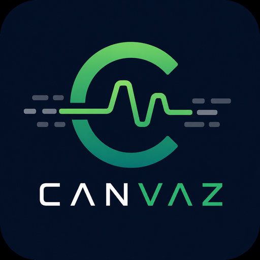

CAN ANALYZER01Canvaz.
See what’s happening on the bus.
Trace, decode, plot, and simulate CAN traffic in one place. Turn raw frames into meaningful signals with DBC files, then follow them live.
- Live frame tracing and filtering
- DBC decoding and real-time signal plots
- Message simulation and J1939 support
- Kvaser, PEAK PCAN, and Linux SocketCAN